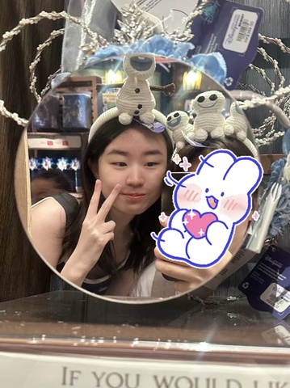

基本信息
1-page Resume (Encouraged，PDF格式，中英文均可)
Portfolio or Additional Files (Optional，PDF或视频)
请把文件名命为：first name_Last name_netid
请上传一张自己的照片，普通的生活照就可以！（只是为了面试的时候我们可以把你认出来）

查看原图
查看原图
通用问题部分
为什么想要加入CSSA？
作为一名转学生，我希望通过CSSA认识更多朋友，早点融入新的环境。同时，我也希望将自己在沟通与宣传方面的经验运用到CSSA的活动中，为CSSA做出自己的那份贡献。对我来说，CSSA不仅提供了一个能支持、联络同学的平台，更提供了一个让我能够发挥专长并共同成长的机会。
你心目中CSSA是个什么样的组织？
我觉得CSSA是一个让中国留学生很有安心感的组织。在真正到校之前，CSSA就会举办新生见面会、接机等活动，帮助新生缓解面对新环境的紧张。开学后，还会组织很多很有意思的活动，在节日期间还会组织春晚，把中国留学生联系在一起，让大家在异国他乡也能感受到一种归属感。
加入CSSA之后，你最想在康奈尔校园内实现的事情是什么？
我最想做的事情就是通过和CSSA一起举办各种活动，让像我一样的转学生或者新生在康奈尔有更多交流和联系的机会，在校园里找到归属感。同时，这也是一个锻炼我沟通和组织能力的好机会，对我来说非常有意义。
宣传部
如果申请宣传部，我们强烈建议提交一份作品集（max 2 pages）。
第一志愿为什么选择这个部门？
我第一志愿选择宣传部，是因为我在之前呆过的社团有过相关经验，对这方面流程比较了解，我本人也很喜欢做设计。宣传部的工作能让我把兴趣和能力结合起来，用海报、推文等方式更好地帮助CSSA宣传活动。
内联部
第二志愿为什么选择这个部门？
我选内联部作为第二志愿，主要是因为作为转学生，我特别希望能在CSSA里认识更多朋友，而内联部正是通过活动把大家联系在一起的部门。我很喜欢这里轻松、热情的氛围，也希望能贡献自己的努力，让大家在这个集体里更加紧密、更有归属感。
是否接受部门调剂？
是